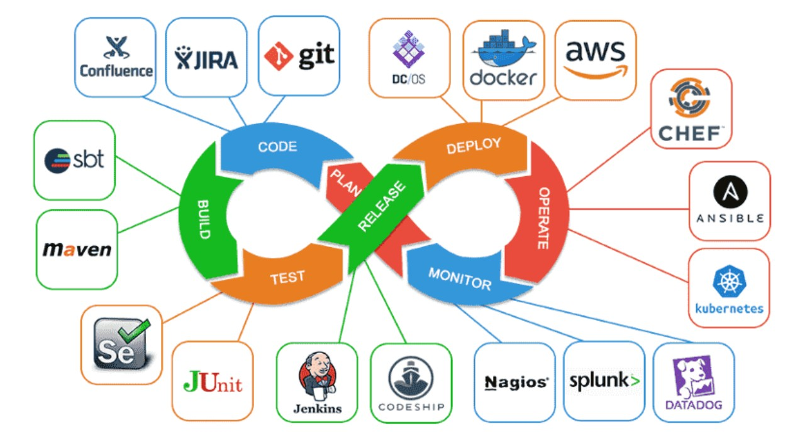
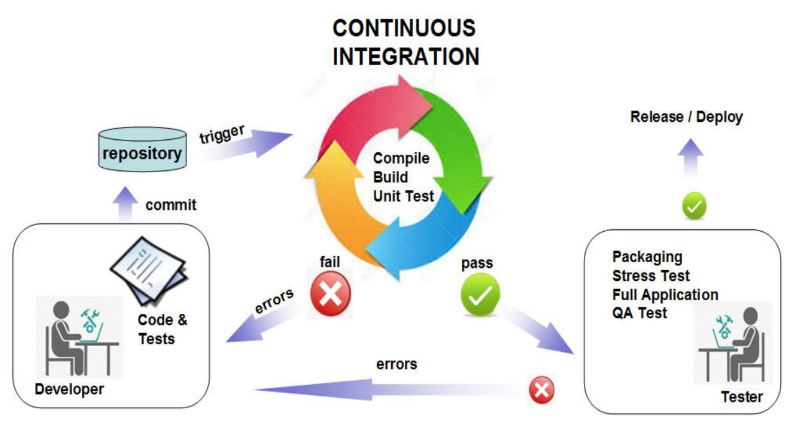

Streamlining Development: A Guide to Continuous Integration with Jenkins
Introduction: Continuous Integration (CI) has become a cornerstone in modern software development, ensuring a smooth and efficient workflow. Among the myriad of CI tools available, Jenkins stands out as a robust and versatile choice. In this blog post, we'll delve into the importance of Continuous Integration and explore how Jenkins can be a game-changer for your development process.
The Need for Continuous Integration: In a rapidly evolving software landscape, where updates and changes are constant, developers face the challenge of integrating code seamlessly. Continuous Integration addresses this challenge by automating the process of code integration, allowing teams to detect and fix issues early in the development cycle. This results in improved code quality, faster release cycles, and a more collaborative development environment.
Jenkins: An Overview: Jenkins, an open-source automation server, has emerged as a preferred choice for implementing Continuous Integration. Its extensibility and plugin ecosystem make it adaptable to various environments and project requirements. Jenkins automates the building, testing, and deployment of code, providing real-time feedback to developers.
Jenkins: Empowering Devs, Streamlining Code. Elevate your software game with seamless Continuous Integration for faster, flawless development.

Key Features of Jenkins for Continuous Integration: Jenkins, an open-source automation server, has emerged as a preferred choice for implementing Continuous Integration. Its extensibility and plugin ecosystem make it adaptable to various environments and project requirements. Jenkins automates the building, testing, and deployment of code, providing real-time feedback to developers.
1. Automated Builds:
Jenkins, an open-source automation server, has emerged as a preferred
choice for implementing Continuous Integration. Its extensibility and
plugin ecosystem make it adaptable to various environments and project
requirements. Jenkins automates the building, testing, and deployment of
code, providing real-time feedback to developers.
2. Continuous Testing::
With Jenkins, automated testing becomes an integral part of the
development pipeline. This includes unit tests, integration tests, and
other types of tests that validate the functionality of the code. Early
detection of bugs leads to quicker resolutions.
3. Continuous Deployment:
Jenkins facilitates the automated deployment of applications, making it
easier to release software updates rapidly. This helps in achieving a
continuous delivery pipeline, ensuring that the latest, tested code is
always ready for deployment.
4. Extensive Plugin Ecosystem:
Jenkins boasts a vast array of plugins that enhance its functionality.
Whether it's integrating with version control systems, configuring
notifications, or connecting with other tools, Jenkins plugins provide
flexibility and customization.
Conclusion: Continuous Integration with Jenkins is a powerful approach to streamline development processes. By automating key aspects of the software development lifecycle, Jenkins allows teams to collaborate more effectively, catch and rectify issues early, and deliver high-quality software with greater speed and confidence. Incorporating Jenkins into your development workflow can be a transformative step towards achieving a more efficient and reliable software development pipeline.